![[eqn]](eqn/lineshapes2.png) is
the distance between the inflection points. It
is related to the FWHM (full width at half height) via
is
the distance between the inflection points. It
is related to the FWHM (full width at half height) via
The most common line shapes in EPR are Gaussian and Lorentzian. In addition, Dysonians and Voigtians are used.
The formula for a Gaussian absorption lineshape normalized so that its integral is 1 is
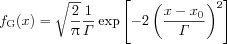
where x0 is the line centre and
is
the distance between the inflection points. It
is related to the FWHM (full width at half height) via
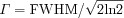
At the center x0 the value of the Gaussian is
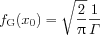
The first derivative has a peak-to-peak distance of ![[eqn]](eqn/lineshapes5.png) .
.
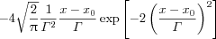The integral of the Gaussian lineshape function is
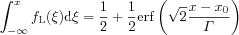
The formula for a Lorentzian absorption lineshape normalized so that its integral is 1 is
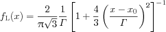
where x0 is the center and 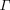 is the distance between the inflection points. It is related to the FWHM (full width at half height) via
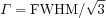
At the center x0 the value of the Lorentzian is
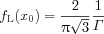
The first derivative has a peak-to-peak distance of ![[eqn]](eqn/lineshapes12.png) .
.
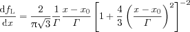The integral of the Lorentzian lineshape function is
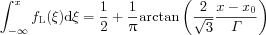
The Voigt line shape is the convolution of Lorentzian and a Gaussian line shape. It cannot be expresed in closed analytical form. It can be approximated by a linear combination of a Lorentzian and a Gaussian, a so-called pseudo-Voigt function.